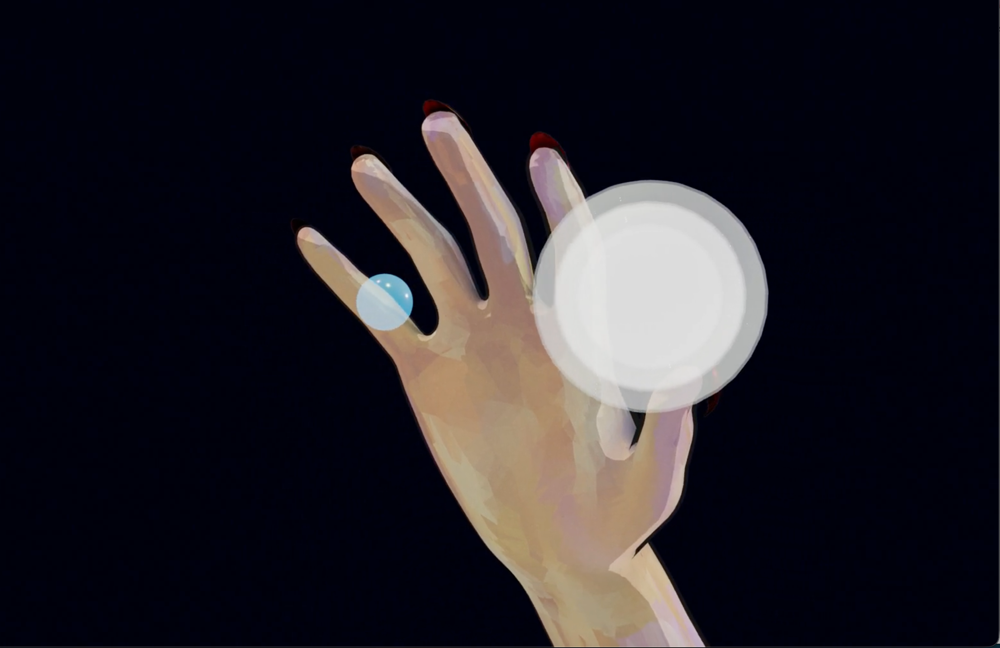
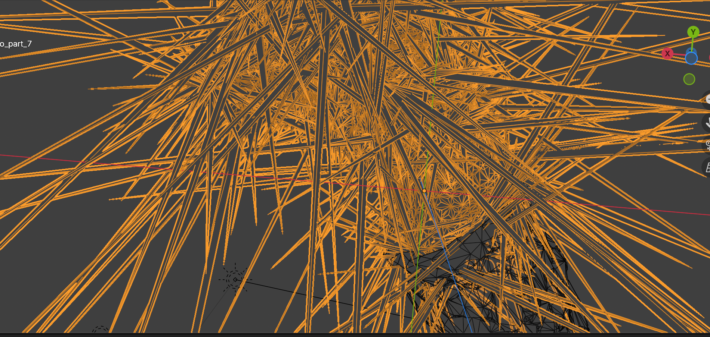
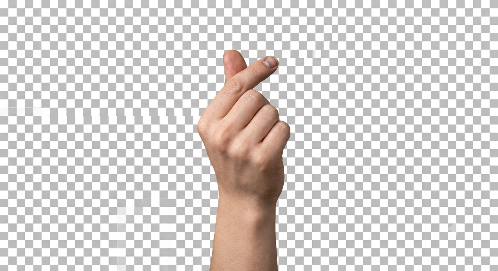

思惟する手
手は、見る対象であると同時に、世界へ触れるための器官でもある。回転する手の像を固定せず、見る側の指の動きと重ねることで、鑑賞と接触の境界を揺らす。
AN INTERACTIVE FIELD OF TOUCH
画面に触れて、ゆっくり動かす
指でなぞる。長く触れる。痕跡は留まらず、次の形へ移っていく。
手は、見る対象であると同時に、世界へ触れるための器官でもある。回転する手の像を固定せず、見る側の指の動きと重ねることで、鑑賞と接触の境界を揺らす。
中心と周縁、像と残像、接近と離脱。曼荼羅的な反復構造を、特定の意味を押しつける記号ではなく、身体が空間を読み取るためのリズムとして扱う。
なめらかな映像だけでは消えてしまう、手描き線、粒子、不均質な光。目で追う行為が皮膚感覚を呼び起こすとき、デジタル像は単なる記録から体験へ移る。



カメラの手に素材を重ね、指の上で見え方を確認する。